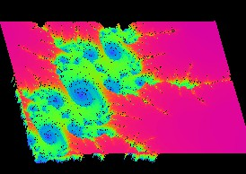
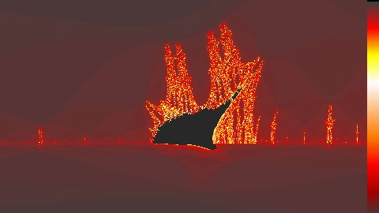
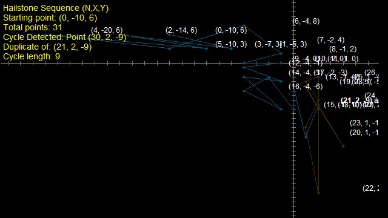
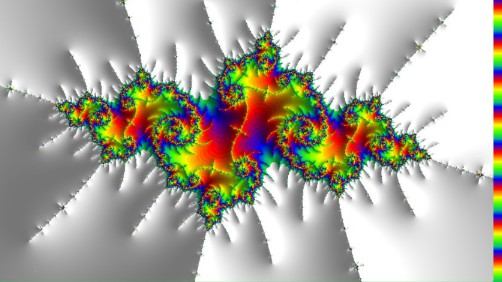
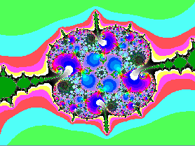

Fractals are selected from the Fractals Menu or by pressing 'T'.
ManpWIN provides a rich collection of fractal types, ranging from the classic Mandelbrot set to more advanced techniques such as perturbation and derivative rendering. Each offers a different way to explore the infinite detail and structure of complex mathematics.
Some fractals emphasise speed and deep zoom capability, while others highlight unique visual forms and mathematical behaviour.
Fractals may be selected from the Fractals menu or by pressing T.
Multi-threading can significantly improve calculation speed by dividing the image into sections and processing them in parallel across multiple CPU cores.
Multi-threading is available for most pixel-based fractals, including those using the formula parser, as well as perturbation and slope-based rendering modes. Support will continue to expand as legacy code is progressively upgraded.
In the multi-thread setup dialog, several delay options are available. In most cases, these should not need adjustment. However, on rare occasions, increasing delays may help avoid instability, although this can reduce performance.
Because multiple threads may access screen memory simultaneously, visual artefacts can occasionally occur. Using a mutex to control access can prevent this, but may also impact performance slightly.
ManpWIN supports a range of arithmetic types to balance performance and precision when rendering fractals.
Lower precision arithmetic offers faster performance, while higher precision is required for deep zooms and detailed exploration.
See Types of Arithmetic Supported for further details.
The Mandelbrot set is the original fractal. Refer to Scientific American, August 1985.
It is defined by the iterative formula:
zn+1 = zn2 + C
Here, Zn is the current value, Zn+1 is the next value, and C represents the position on the screen. Z is a complex number of the form A + iB, where i is the square root of -1.
Perturbation is a high-performance rendering technique used for deep zooms into fractals.
It works by computing a high-precision reference orbit and then calculating nearby pixels using relative differences. This significantly reduces the amount of computation required.
Bivariate Linear Approximation (BLA) is used to further accelerate rendering for Mandelbrot and power fractals by approximating orbit behaviour over small regions.
BLA is not applicable to certain derivative-based fractals, such as Burning Ship, where the required mathematical properties are not present.
This approach enables extremely deep zoom levels that would be impractical using standard arithmetic alone.
Mandelbrot derivatives are variations of the standard Mandelbrot formula, typically created by applying transformations to the real and/or imaginary components during iteration.
These modifications can include absolute values, sign changes, or variations in the interaction between components. The result is a wide range of fractals with very different visual characteristics.
Many of these fractals are based on applying absolute value operations to different parts of the iteration, producing sharp, highly structured forms.
Higher-order variants (cubic, 4th order, 5th order and beyond) are also supported. These extend the same concepts to more complex polynomials and can produce increasingly intricate structures.
For full mathematical definitions and additional variants, refer to source documentation and specialised references.
The following examples illustrate some of the more widely used Mandelbrot derivatives. Each is formed by modifying the standard iteration in a different way, resulting in distinct visual characteristics.

Here is a zoom into the Burning Ship fractal and shows where it gets its characteristic name
The Burning Ship fractal produces distinctive flame-like structures and is one of the most well-known Mandelbrot derivatives.
The fractal was first described by Michael Michelitsch and Otto E. Rössler in 1992.
It is generated by iterating a modified Mandelbrot function in which the real and imaginary components are replaced by their absolute values before squaring.
This mapping is non-analytic, as its real and imaginary components do not satisfy the Cauchy–Riemann equations.
zi = abs(zr * zi) * 2.0 - JuliaI; zr = zrsqr - zisqr + JuliaR;
The use of absolute values creates sharp, jagged features unlike the smooth forms of the Mandelbrot set.
Further reading:
The Celtic fractal is a Mandelbrot derivative that introduces symmetry by applying an absolute value to the real component of the iteration.
zi = zr * zi * -2.0 + JuliaI; zr = -abs(zrsqr - zisqr) + JuliaR;
This produces intricate, interwoven structures with strong internal symmetry.
The Mandelbar, also known as the Tricorn, is formed by reversing the sign of the imaginary component during iteration.
zi = zr * zi * -2.0 + JuliaI; zr = zrsqr - zisqr + JuliaR;
This results in a fractal with a distinctive three-fold symmetry and mirrored structure compared to the Mandelbrot set.
The Buffalo fractal is derived from the Burning Ship and introduces additional absolute value transformations.
It is typically defined by applying absolute values to both real and imaginary components during iteration.
This produces complex, highly textured structures with strong directional features.
The Perpendicular Mandelbrot is a variation of the Burning Ship in which the absolute value is applied selectively to one component during iteration.
zi = abs(zr) * zi * -2.0 + JuliaI; zr = zrsqr - zisqr + JuliaR;
This creates structures that differ significantly from both the Mandelbrot set and the Burning Ship, often exhibiting strong directional asymmetry.
Many additional variations exist, including higher-order and hybrid forms, which extend these ideas further.
In addition to Mandelbrot-based fractals, ManpWIN includes a range of other mathematical and experimental visualisations.
The Newton fractal visualises the convergence of complex roots using Newton’s method. It plots the roots of the equation:
Zn = 1
Different starting points converge to different roots, producing intricate boundary structures between regions.
A generalisation of the Mandelbrot set defined by:
Zn+1 = Znp + C
The parameter p controls the power of the iteration, producing a wide range of shapes and symmetries.
Polynomial fractals extend the standard Mandelbrot formulation by allowing higher-order polynomials to be used in the iteration.
Zn+1 = Znn + Znn-1 + ... + Zn2 + Zn + C
These fractals produce highly complex and varied structures depending on the degree and combination of terms used.
They provide a flexible framework for exploring a wide range of behaviours beyond simple power-based fractals.
The Mandelbrot set is a special case of a polynomial fractal where only the second-order term is present.
A classic fractal introduced in Scientific American (September 1986), featuring circular structures and recursive patterns.
A transcendental fractal defined by:
Zn+1 = sin(Zn) * C
This produces flowing, wave-like structures with complex periodic behaviour.
A fractal based on the exponential function:
Zn+1 = exp(Zn) * C
The rapid growth of the exponential function creates dramatic and often chaotic structures.
An experimental fractal inspired by the Fibonacci sequence, often producing spiral patterns similar to those found in nature.
A procedural fractal inspired by Creative Computing (July 1985), generating natural-looking terrain and landscape structures.
Visualises the harmonic components that combine to form complex waveforms.
Displays the frequency spectrum of signals using FFT techniques.

A non-raster fractal that visualises a two-dimensional extension of the Collatz (hailstone) sequence. Starting from an integer coordinate, the system applies simple parity-based rules to generate a path through the integer lattice.
Unlike traditional fractals based on complex numbers, the Hailstone sequence explores discrete dynamical behaviour, producing intricate paths that may either enter repeating cycles or diverge outward.
The evolving sequence is displayed as connected line segments, with optional axes, point markers, and coordinate labels to aid interpretation.
Supports:
This fractal is inspired by extensions of the classic 3n+1 (Collatz) problem into higher dimensions.
ManpWIN also includes a number of specialised and experimental fractals, many inspired by classic publications and mathematical explorations.
A chaotic dynamical system originating from BYTE magazine (December 1986). The Hénon map produces strange attractors and complex orbit structures from simple iterative equations.
Inspired by Clifford A. Pickover’s The Loom of God (pp. 266–267), this fractal explores unusual numeric transformations that produce intricate and often surreal patterns.
A variation of the Mandelbrot set that visualises the trajectories of escaping points rather than the set itself, producing luminous and ghost-like images.
Reference:
Buddhabrot Source
Attributed to Andrew Wayne Graff and sometimes known as the Secant Sea, this fractal produces wave-like and highly textured structures.
A family of fractals based on modified polynomial formulas of the form:
a * z2 + zn + c or a * z2 - zn + c
The sign may be either positive or negative.
The addition of an arbitrary constant introduces a wide range of variations and dynamic behaviours.
An example of an Integrated Fractal System using trigonometric functions. Variations such as spherical, swirl, and pseudo-horseshoe transforms produce intricate, organic, and often decorative patterns.
An extension of exponentiation where powers are iterated repeatedly. In fractal form, this produces highly complex and rapidly growing structures.
z -> cz
Tetration-based fractals exhibit intricate boundary behaviour and extreme sensitivity to initial conditions.
A fractal based on Kleinian groups, involving Möbius transformations in the complex plane. These fractals produce highly detailed and often symmetrical structures.
They are closely related to hyperbolic geometry and group theory, resulting in patterns that can resemble tilings or recursive symmetries.
Slope shading enhances fractals by simulating a light source illuminating the surface. By estimating the slope at each point, the image gains a three-dimensional appearance.
ManpWIN provides two methods for calculating slope:
Both methods are also available in perturbation fractals. However, the analytic derivative method is limited to Mandelbrot and power fractals, as these require continuous derivatives.
Forward differencing is available for many raster-based fractals. These are generally slower, as every pixel must be calculated and are not yet multi-threaded. In some cases, slope accuracy may be reduced due to limitations in continuous iteration count calculations.
An experimental palette animation is available for forward differencing. Set Palette Shift (Fwd Diff) to a small positive integer to enable this effect.

Example of slope shading applied to a fractal.
ManpWIN supports a wide range of fractals originating from the Fractint ecosystem. These include both built-in fractal types and externally defined parameter files.
For detailed descriptions of individual fractals, refer to the Fractint documentation for a description of each fractal.
.par files are supportedDue to differences in file formats, Fractint parameter files are accessed through the Fractal Type dialog rather than the standard ManpWIN interface.
ManpWIN provides an intuitive way to construct Lyapunov fractals using symbolic sequences such as AB and C, simplifying the process of defining iteration patterns.
For further details, refer to:
Lyapunov Fractal (Wikipedia)
The Num fractal was discovered by Robert Foulke and named by his 11-year-old granddaughter.
It is defined by reversing the usual roles of z and a constant:
zn+1 = 2zn + c
It is grouped with Fractint trigonometric-style functions and can be expressed in the general form:
zn+1 = f(nzn) + c
Here zn represents the current iteration and zn+1 the next value.
This fractal highlights an imaginative and playful contribution to mathematics inspired by curiosity and exploration.
ManpWIN includes a built-in formula parser allowing users to define fractals directly using expressions of the form:
F(z) + c
Unlike Fractint, no external formula file is required. Functions can be entered and executed directly within the interface.
Julia and Real-Time Julia modes are not supported in this mode, as they require modification of initial conditions.
ManpWIN supports the Fractint-style formula parser originally developed by Mark Peterson. Documentation is available in Direct Formula documentation. .

These fractals focus on artistic and exploratory mathematical forms, producing visually rich and varied patterns.
ManpWIN includes the full range of TieraZon fractals, with selected types accessible directly through the interface.
Flarium fractals share similarities with TieraZon fractals. Unique Flarium variants are included in addition to the TieraZon set.
A collection of fractals contributed by Marcus Rezende. These include both original creations and fractals sourced from a variety of mathematical explorations.
Each fractal reflects a distinctive style and approach, often accompanied by documentation written in Marcus's own words.
Further details can be found in the Marcus Fractals documentation.
ManpWIN supports a wide range of fractals, spanning classical mathematical sets, experimental systems, and contributions from the wider fractal community.
These fractals vary from well-known sets such as the Mandelbrot and Julia families to more specialised and exploratory forms, including discrete dynamical systems and artistic transformations.
Fractals in ManpWIN may be rendered using different numerical methods, including standard floating point, high-precision arithmetic, and perturbation techniques for deep zoom exploration.
Additional features such as slope shading, colouring methods, and formula parsing allow extensive control over both the mathematical behaviour and visual appearance of each fractal.
Look at Acknowledgments for information about contributions to source code and fractal implementations.
Some fractals and features are experimental and may vary in performance or accuracy depending on the selected rendering method.